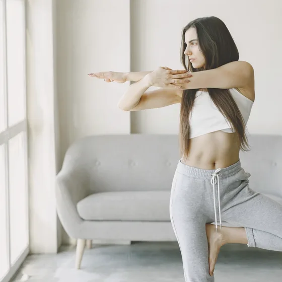
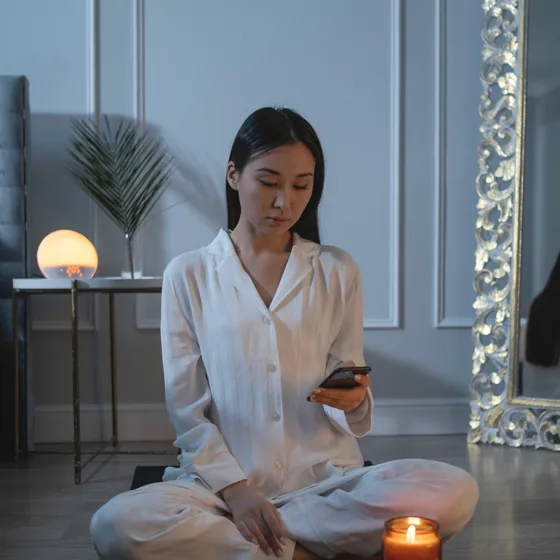
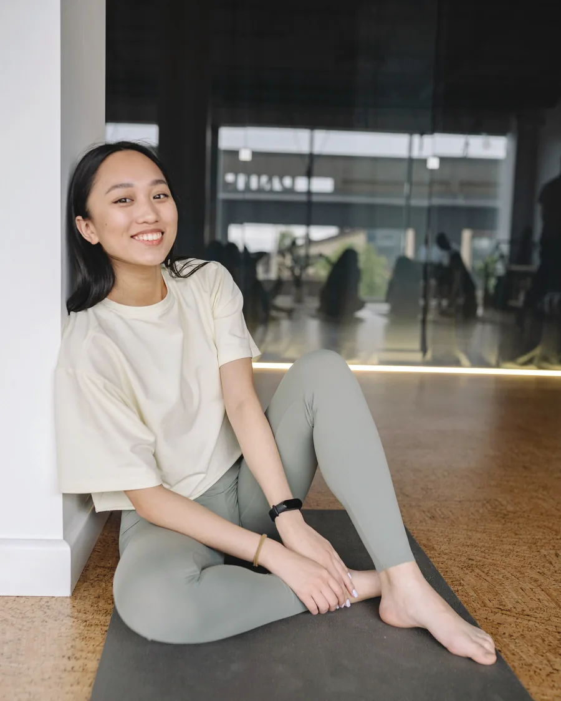
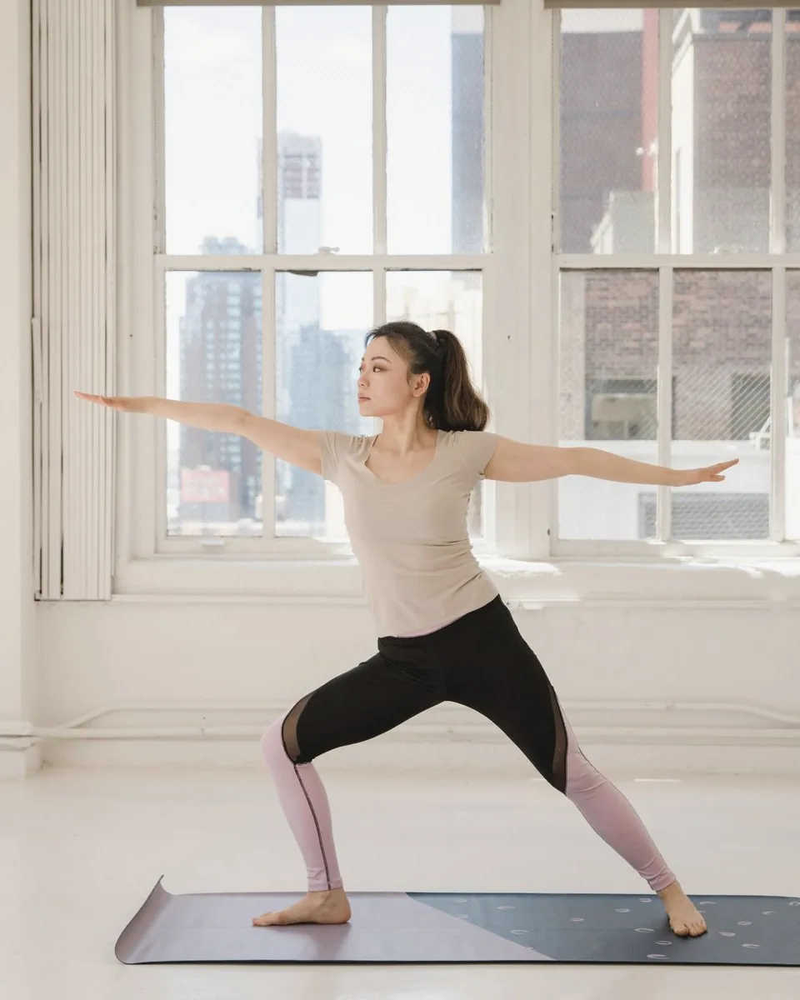
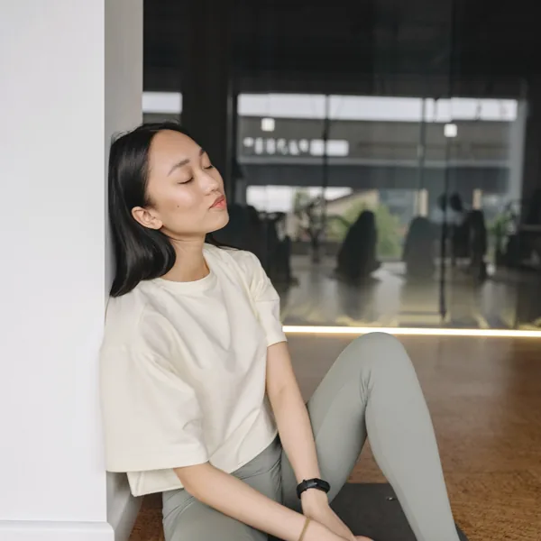
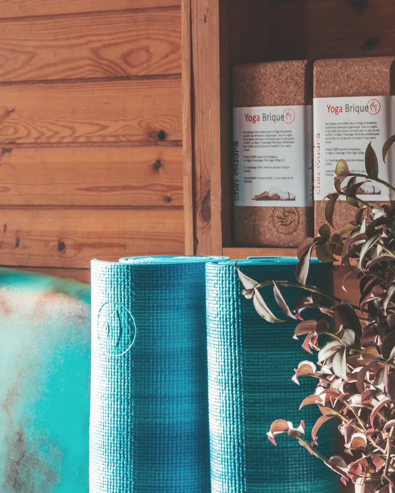
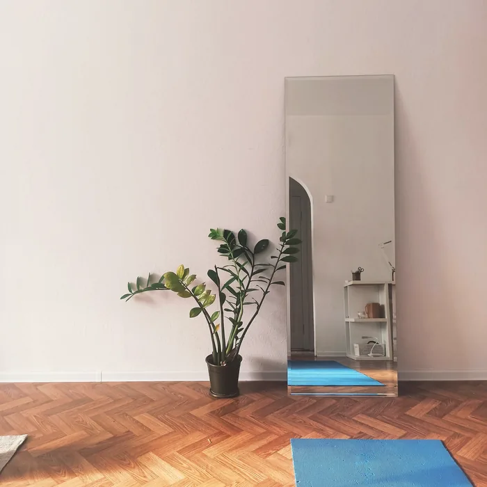
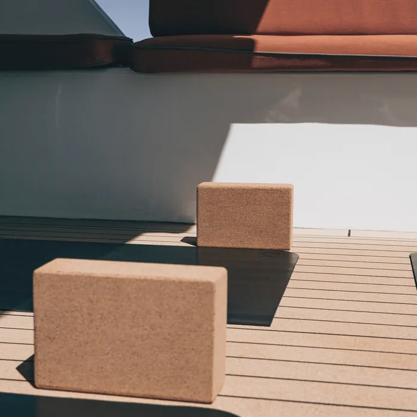

こんな一日、ありませんか
朝の通勤から夜のスマホまで
-
7:40 電車でスマホ
もう首が重い -
13:00 PCの前で
肩が上がったまま -
23:10 寝る前もスマホ
頭痛の予感
- 夕方になると、首の付け根が痛い
- 肩がいつも、耳の近くまで上がっている
- マッサージに行っても、3日で戻る
- 頭痛や目の疲れが、週に何度もある
- 湿布と鎮痛薬が、いつもかばんにある
- 運動したいけれど、時間がない
実は…
もんでも戻るのには
理由があります
- 前かがみ画面をのぞく姿勢で、頭の重さが首にかかる
- 浅い呼吸息が浅くなり、首と肩で息をする
- 動かさない肩甲骨が一日中止まり、血のめぐりが落ちる
こっている場所だけをもんでも、姿勢がそのままなら翌日また固まります。
hodoku では、こりの原因になっている姿勢と呼吸のほうを変えていきます。
hodoku のヨガ
もむのではなく姿勢からほどく
むずかしいポーズはありません。
固まった肩まわりを動く状態に戻すための、45分の練習です。
姿勢を、ひとりずつ見る
1回1〜3名です。立ち方と座り方の癖を見て、その日に動かす場所を決めます。動画やアプリとの、いちばんの違いです。
胸と背中を、ひらく
前かがみで縮んだ胸の前を伸ばし、肩甲骨（背中の羽のような骨）を動かします。肩そのものより、まわりを先にほどきます。
呼吸で、首の力を抜く
吐く息を長くすると、首と肩の力が自然と落ちます。最後の10分は、この呼吸だけをします。
こりは、あなただけではありません
出典：厚生労働省「2025年 国民生活基礎調査の概況」／株式会社クロス・マーケティング「肩こりや首のこりに関する調査（2023年）」
45分の流れ
仕事帰りの45分で、こう変わります
ヨガの経験も、やわらかい体もいりません。
着替えて、立つところから始めます。
-
0–5 min
今日の体を聞く
今日つらい場所、座っていた時間、頭痛の有無を聞きます。その日の内容はここで決めます。
-
5–10 min
姿勢を見る
立った姿を後ろと横から見ます。肩の高さの左右差や、頭の位置を一緒に確かめます。
-

10–35 min
ほどくヨガ
胸をひらく動き、肩甲骨を動かす動き、首を長くする動きの順です。きついと感じたら、その場でやめて構いません。
-

35–45 min
呼吸と、おうち用の1つ
吐く息を長くして首の力を抜きます。最後に、デスクでできる動きを1つだけお伝えします。
通っている方の声
肩が下がると頭まで軽い
voice 01
湿布を買わなくなりました
自分の肩が耳の近くまで上がっていたことに、姿勢チェックで初めて気づきました。デスクでできる動きを昼休みに続けています。
30代会社員・在宅と出社が半々
voice 02
マッサージ通いが、月1回になった
週1回、仕事帰りに寄っています。ジムは着替えが面倒で続かなかったので、手ぶらで行けるのが決め手でした。
40代事務職・週1回
voice 03
朝の枠があるので、送ったあとに行けます
子どもを送ってから7時半の枠に通っています。3人までなので、体がかたくても恥ずかしくありません。
30代パート・小学生の母
※ 掲載の声はサンプル文です。公開時は、本人の許可を得た実際の声に差し替えます。
個人の感想であり、効果を保証するものではありません。ヨガは医療行為ではありません。
講師
はじめましてhodoku の宮下さやです

宮下 さやSaya Miyashita ／ hodoku 主宰
IT企業の営業事務として、11年間PCの前に座っていました。30代の半ばから肩こりと頭痛が続き、鎮痛薬が手放せない時期がありました。
整体にもマッサージにも通いました。でも、変わったのは自分の姿勢を知ってからでした。
同じように「もんでも戻る」と感じている方に、姿勢から変える練習の場所を作りました。上手にならなくていいので、まずは立った姿を見せに来てください。
- RYT200（全米ヨガアライアンス認定の講師資格）
- ヨガ解剖学（体のしくみを学ぶ講座）修了
- ヨガ指導歴 5年・元営業事務

もむより
ひらくOpen, not press
通いやすさ
仕事帰りに手ぶらで寄れます
「時間がない」が、いちばんの壁だと思っています。
だから短く、近く、朝と夜に開けています。

- 3分大宮駅西口から徒歩3分。ビルの2階です
- 45分着替えを入れても1時間。帰りが遅くなりません
- 0円マットとウェアの貸し出しは無料。手ぶらで来られます
- 7:30〜朝は7時半から、夜は21時半まで開けています
よくある質問
はじめる前の気がかりに答えます
Q体がかたくても大丈夫ですか？
大丈夫です。前屈のような動きは少なく、胸と肩甲骨を動かすことが中心です。かたい方ほど、動いた後の軽さが分かりやすいです。
Q運動が苦手で、ヨガも初めてです
通っている方の多くが、運動の習慣がない方です。汗だくになる動きはなく、ウェアも貸し出すので、身構えずに来てください。
Q何回くらい通うと肩が軽くなりますか？
感じ方には個人差があり、お約束はできません。目安として週1回を1〜2か月続け、変化を一緒に確かめていきます。
Q仕事帰りに、そのまま行けますか？
行けます。更衣スペースがあり、マットとウェアは無料で貸し出します。シャワーはありませんが、汗をかく内容ではありません。
Q他の人と一緒だと、恥ずかしいです
1回3名までで、鏡に向かって並ぶことはありません。お一人で受けたい方は、プライベート60をお選びください。
Q痛みが強いときや、通院中でも受けられますか？
ヨガは医療行為ではなく、治療の代わりにはなりません。しびれや強い痛みがある方は、先に医療機関を受診してください。通院中の方は、主治医に相談のうえでお越しください。
場所と時間
大宮駅から歩いて3分の小さなスタジオです
ビルの2階、12畳のひと部屋です。
1回1〜3名だけをお迎えします。



- 住所
- 埼玉県さいたま市大宮区桜木町0-0-0 〇〇ビル 2F
1階がカフェのビルです。ご予約後に行き方をお送りします
- 最寄り駅
- JR・東武「大宮駅」西口から徒歩3分
駐車場はありません。駅前のコインパーキングをご利用ください
- 時間
- 平日 7:30〜9:30／17:30〜21:30、土 9:00〜16:00
月朝夜火朝夜水休木朝夜金朝夜土昼日休
- 対象
- 女性専用・完全予約制
- 持ち物
- 飲み物だけ。マットとウェアはこちらで用意します